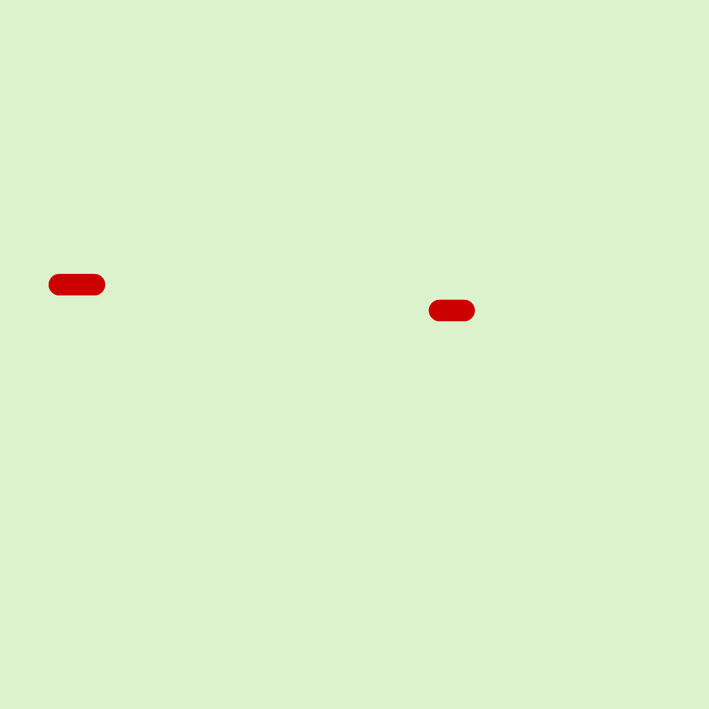
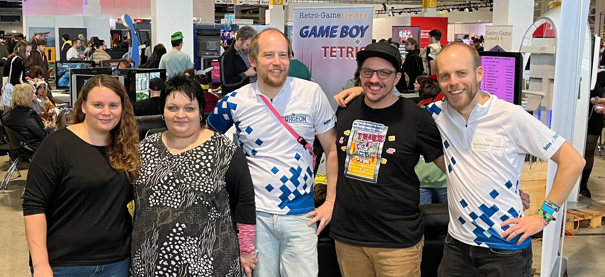

Hello, friends! I'm Tolstoj. I've spent the last few years deep-diving into the inner workings of Game Boy Tetris and its competitive scene, and now I’m sharing my knowledge with you.
On my journey, I met a lot of cool and talented people whom I will introduce in the future. At this point, there are four people I'd like to give a shout-out to: Toni, Pascal, -JJ and Sebastian Staacks.
Below, you will find a growing collection of tools I developed, such as a firmware re-labeler and an OCR tool.
Most of my work revolves around DiCon X's (Sebastian Staacks) GB Interceptor , GB Tetris' biggest and most important asset: a Game Boy "capture card".
And yes, I do use AI to help me with my projects, and no, I don't think that's bad at all. Embrace the future!

CTEC Game Boy Team 2023 aka "The Lads": Kirjava, Toni, BV,
-JJ, Tolstoj, (Jacob)

PopCon 2024: Pusteblume, Nitsrek85, Pascal, Tolstoj, Toni